以下是可以在118.178.111.167 23333端口使用的先行卡的列表。下载补丁后即可使用。
使用方法：原版游戏下载补丁后解压至游戏文件夹，YGOMobile请自定义数据库（方法请查看压缩包内使用说明），暂不保证对其他版本的支持。
资料来源：任天堂世界论坛。
脚本作者：ygopro-pre-script，YGOPRO。目前所有脚本来自于以上这2个项目，在此对各自的贡献者表示感谢。
版权声明：转载请注明出自本页面，并完整保留附带的使用说明文档。如果您想对本项目进行修改，请移步这里，但我们建议您直接参与官方项目ygopro-pre-script。
星星和加号图标是Yusuke Kamiyamane的作品。
| 卡图 | 卡名 | 效果 |
|---|---|---|
| 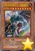 | 古代的机械巨人-究极重击 | [怪兽|效果] 机械/地 [★8] 3000/3000 这张卡不能特殊召唤。 ①：这张卡向守备表示怪兽攻击的场合，给与攻击力超过那个守备力的数值的战斗伤害。 ②：这张卡的攻击破坏怪兽时，从手卡丢弃1只机械族怪兽才能发动。这张卡可以继续攻击。这个效果1回合可以使用最多2次。 ③：场上的这张卡被战斗·效果破坏的场合才能发动。从卡组把1张「融合」加入手卡，从自己墓地选这张卡以外的1只「究极重击」怪兽加入手卡。 |
| 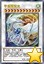 | 宇宙耀变龙 | [怪兽|效果|同调] 龙/风 [★12] 4000/4000 同调怪兽调整＋调整以外的同调怪兽2只以上 这张卡不用同调召唤不能特殊召唤。 ①：可以把场上的这张卡直到结束阶段除外从以下效果选择1个发动。 ●对方把魔法·陷阱·怪兽的效果发动时才能发动。那个发动无效并破坏。 ●对方把怪兽召唤·反转召唤·特殊召唤之际才能发动。那个无效，那些怪兽破坏。 ●对方怪兽的攻击宣言时才能发动。那次攻击无效，那之后战斗阶段结束。 |
| 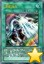 | 流星音击 | [魔法|速攻] ①：以自己场上1只「星尘」同调怪兽为对象才能发动。这个回合，那只自己的同调怪兽和对方怪兽进行战斗的场合，伤害步骤开始时那只对方怪兽回到持有者卡组。 ②：自己场上的「星尘」同调怪兽为让效果发动而把自身解放的场合，可以作为代替把墓地的这张卡除外。 |
| 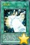 | 弯月罩 | [魔法|速攻] ①：怪兽的攻击无效时，可以从以下效果选择1个发动。 ●变成这个回合的结束阶段。 ●以自己场上1只「希望皇 霍普」超量怪兽为对象才能发动。那只怪兽的攻击力直到回合结束时变成原本攻击力的2倍。 ②：自己场上的「希望皇 霍普」超量怪兽把超量素材1个取除来让效果发动的场合，可以作为取除的超量素材的代替而把墓地的这张卡除外。 |
| 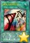 | 螺旋之强袭炸裂 | [魔法] ①：可以从以下效果选择1个发动。 ●自己场上有「异色眼」卡存在的场合，以场上1张卡为对象才能发动。那张卡破坏。 ●从卡组的怪兽以及自己的额外卡组的表侧表示的灵摆怪兽之中选1只7星「异色眼」怪兽加入手卡。 |
| 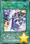 | 娱乐决斗 | [魔法|场地] ①：只要这张卡在场地区域存在，双方玩家每次在1回合中各把以下条件满足，每1个条件在1回合各有1次从卡组抽2张。 ●把等级不同的怪兽5只同时特殊召唤。 ●自身1只怪兽进行5次战斗。 ●连锁5以上把卡的效果发动。 ●掷骰子的次数以及投掷硬币的次数变成合计5次。 ●受到让自身基本分变成500以下的伤害。 |
| 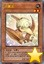 | 小翼龙 | [怪兽|效果] 恐龙/地 [★2] 500/500 ①：这张卡被效果破坏送去墓地的场合发动。从卡组把1只4星以上的恐龙族怪兽特殊召唤。这个效果特殊召唤的怪兽在这个回合不能攻击。 |
| 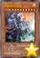 | 究极传导恐兽 | [怪兽|效果] 恐龙/光 [★10] 3500/3200 这张卡不能通常召唤。把自己墓地2只恐龙族怪兽除外的场合可以特殊召唤。 ①：1回合1次，自己·对方的主要阶段才能发动。选自己的手卡·场上1只怪兽破坏，对方场上的表侧表示怪兽全部变成里侧守备表示。 ②：这张卡可以向对方怪兽全部各作1次攻击。 ③：这张卡向守备表示怪兽攻击的伤害步骤开始时才能发动。给与对方1000伤害，那只守备表示怪兽送去墓地。 |
| 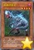 | 食魂窃蛋龙 | [怪兽|效果] 恐龙/暗 [★4] 1800/500 「食魂窃蛋龙」的①②的效果1回合各能使用1次。 ①：这张卡召唤·特殊召唤成功的场合才能发动。从卡组选1只恐龙族怪兽加入手卡或送去墓地。 ②：以这张卡以外的场上1只4星以下的恐龙族怪兽为对象才能发动。那只怪兽破坏。那之后，从自己墓地选1只恐龙族怪兽守备表示特殊召唤。 （注：效果暂未确定） |
| 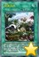 | 失落世界 | [魔法|场地] ①：恐龙族以外的场上的怪兽的攻击力·守备力下降500。 ②：1回合1次，恐龙族怪兽召唤·特殊召唤的场合才能发动。在对方场上把1只「侏罗蛋衍生物」（恐龙族·地·1星·攻/守0）守备表示特殊召唤。 ③：只要对方场上有衍生物，对方不能把衍生物以外的场上的怪兽作为效果的对象。 ④：1回合1次，场上的通常怪兽被战斗·效果破坏的场合，可以作为代替把那个数量的自己的手卡·卡组的恐龙族怪兽破坏。 |
| 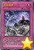 | 生存境界 | [陷阱] ①：场上的通常怪兽全部破坏，把最多有破坏数量的4星以下的恐龙族怪兽从卡组往自己场上特殊召唤。这个效果特殊召唤的怪兽在结束阶段破坏。 ②：把墓地的这张卡除外，以自己场上1只恐龙族怪兽和对方场上1张卡为对象才能发动。那些卡破坏。 |
| 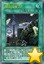 | 融合回收工厂 | [魔法|场地] 1回合1次：可以丢弃1张手卡；从自己的卡组或者墓地把1张「融合」加入手卡。1回合1次，在结束阶段时：可以选择作为这个回合融合召唤使用过的融合素材的自己墓地1只怪兽；那只怪兽加入手卡。 |
| 娱乐伙伴 天空魔术家 | [怪兽|效果] 魔法师/风 [★7] 2500/2000 「娱乐伙伴 天空魔术家」的②的效果1回合只能使用1次。 ①：1回合1次，自己把魔法卡发动的场合发动。这张卡的攻击力上升300。 ②：以自己场上1张永续魔法卡为对象才能发动。那张卡回到持有者手卡。那之后，可以从手卡把1张「魔术师」永续魔法卡发动。这个效果在对方回合也能发动。 ③：表侧表示的这张卡从场上离开的场合，以场上1张卡为对象才能发动。那张卡破坏。 | |
| 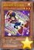 | 娱乐伙伴 天空徒弟 | [怪兽|效果] 魔法师/光 [★3] 800/800 「娱乐伙伴 天空徒弟」的①的效果1回合只能使用1次。 ①：让自己场上1只5星以上的「娱乐伙伴」怪兽回到持有者手卡才能发动。这张卡从手卡特殊召唤。这个效果在对方回合也能发动。 ②：这张卡和对方怪兽进行战斗的场合，直到伤害步骤结束时那只怪兽的效果无效化。 ③：自己场上有其他的「娱乐伙伴」怪兽存在的场合，这张卡向对方怪兽攻击的伤害计算前才能发动。那只对方怪兽破坏。 |
| 娱乐伙伴 时事秀舞者 | [怪兽|效果] 魔法师/光 [★3] 800/1000 ①：对方场上有怪兽存在，自己场上没有怪兽存在的场合，这张卡可以从手卡特殊召唤。 ②：「娱乐伙伴」怪兽上级召唤的场合，这张卡可以作为2只的数量解放。 | |
| 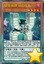 | 娱乐伙伴 U合石人 | [怪兽|效果|灵摆] 恶魔/暗 [★4] 1600/1000 1/1 ←1 【灵摆】 1→ ①：1回合1次，自己场上有怪兽融合召唤的场合才能发动。从自己墓地的灵摆怪兽以及自己的额外卡组的表侧表示的灵摆怪兽之中选「娱乐伙伴」怪兽、「异色眼」怪兽、「魔术师」怪兽之内任意1只加入手卡。 【怪兽效果】 ①：这张卡灵摆召唤成功的回合的自己主要阶段才能发动1次。融合怪兽卡决定的包含这张卡的融合素材怪兽从自己场上送去墓地，把那1只融合怪兽从额外卡组融合召唤。那个时候，其他的融合素材怪兽必须全部是龙族怪兽。 |
| 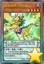 | 娱乐伙伴 小判龙 | [怪兽|效果|灵摆] 龙/水 [★4] 1700/1000 5/5 ←5 【灵摆】 5→ ①：1回合1次，以从额外卡组特殊召唤的自己场上1只龙族怪兽为对象才能发动。这个回合，那只自己怪兽和对方怪兽进行战斗的场合，那只对方怪兽在伤害计算后除外。 【怪兽效果】 ①：只要这张卡在怪兽区域存在，这张卡以外的自己场上的龙族怪兽攻击力上升500，不会被效果破坏。 |
| 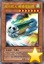 | 疾行机人 噗噗噔骷髅 | [怪兽|效果] 机械/风 [★7] 0/3000 「疾行机人 噗噗噔骷髅」的③的效果1回合只能使用1次。 ①：自己·对方的准备阶段，从额外卡组特殊召唤的怪兽在对方场上存在的场合才能发动。这张卡从手卡特殊召唤。 ②：这张卡不会被和通常召唤的怪兽的战斗破坏。 ③：这张卡的战斗发生的对自己的战斗伤害由对方代受。 ④：自己场上有「疾行机人」怪兽以外的表侧表示怪兽存在的场合这张卡破坏。 |
| 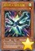 | 疾行机人 磁铁恶魔 | [怪兽|效果|调整] 机械/风 [★1] 0/0 「疾行机人 磁铁恶魔」的效果1回合只能使用1次。这张卡不用这张卡的效果的同调召唤不能作为同调素材。 ①：这张卡在自己主要阶段召唤·特殊召唤成功的场合，以对方场上1只表侧表示怪兽为对象才能发动。只用那只怪兽和这张卡为素材把1只风属性同调怪兽同调召唤。 |
| 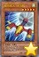 | 疾行机人 56飞机 | [怪兽|效果] 机械/风 [★5] 1800/0 「疾行机人 56飞机」的①的效果1回合只能使用1次。 ①：自己场上有怪兽特殊召唤的场合才能发动。这张卡从手卡特殊召唤。这个效果的发动后，直到回合结束时自己不是风属性怪兽不能特殊召唤。 ②：这张卡召唤·特殊召唤成功的场合，以场上1只表侧表示怪兽为对象才能发动。那只怪兽的攻击力直到回合结束时下降600。 |
| 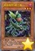 | 捕食植物 蜂兰蝎 | [怪兽|效果] 植物/暗 [★3] 1200/800 「捕食植物 蜂兰蝎」的效果1回合只能使用1次。 ①：这张卡召唤·特殊召唤成功的场合，从手卡把1只怪兽送去墓地才能发动。从卡组把「捕食植物 蜂兰蝎」以外的1只「捕食植物」怪兽特殊召唤。 |
| 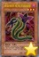 | 捕食植物 蛇瓶草眼镜蛇 | [怪兽|效果] 植物/暗 [★3] 1000/1500 「捕食植物 蛇瓶草眼镜蛇」的效果在决斗中只能使用1次。 ①：这张卡用「捕食植物」怪兽的效果特殊召唤成功的场合才能发动。从卡组把1张「融合」魔法卡加入手卡。 |
| 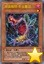 | 捕食植物 冬虫夏草 | [怪兽|效果] 植物/暗 [★1] 0/0 ①：自己准备阶段把墓地的这张卡除外，以自己墓地2只4星以下的「捕食植物」怪兽为对象才能发动。那些怪兽特殊召唤。这个效果的发动后，直到回合结束时自己不能通常召唤，不是融合怪兽不能特殊召唤。 |
| 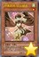 | 抒情歌鸲-钴尖晶雀 | [怪兽|效果] 鸟兽/风 [★1] 0/100 「抒情歌鸲-钴尖晶雀」的①的效果1回合只能使用1次。 ①：这张卡特殊召唤成功的场合才能发动。从卡组把1只鸟兽族·1星怪兽加入手卡。 ②：场上的这张卡为素材作超量召唤的风属性怪兽得到以下效果。 ●这张卡不会成为对方的效果的对象。 |
| 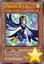 | 抒情歌鸲-青玉燕 | [怪兽|效果] 鸟兽/风 [★1] 100/0 「抒情歌鸲-青玉燕」的①的效果1回合只能使用1次。 ①：自己场上有鸟兽族怪兽存在的场合才能发动。这张卡和1只鸟兽族·1星怪兽从手卡特殊召唤。 ②：场上的这张卡为素材作超量召唤的风属性怪兽得到以下效果。 ●这次超量召唤成功的场合，以自己墓地1只「抒情歌鸲」怪兽为对象才能发动。那只怪兽在这张卡下面重叠作为超量素材。 |
| 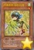 | 抒情歌鸲-绿松石莺 | [怪兽|效果] 鸟兽/风 [★1] 100/100 「抒情歌鸲-绿松石莺」的②的效果1回合只能使用1次。 ①：自己场上没有怪兽存在的场合，这张卡可以从手卡特殊召唤。 ②：这张卡从手卡的特殊召唤成功的场合才能发动。从自己的手卡·墓地选1只「抒情歌鸲」怪兽特殊召唤。 |
| 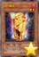 | DD 幽灵 | [怪兽|效果|调整] 恶魔/暗 [★2] 600/300 ①：这张卡被送去墓地的场合，以自己墓地1只「DD 幽灵」以外的「DD」怪兽或者1张「契约书」卡为对象才能发动。那1张同名卡从卡组送去墓地。 ②：这张卡被除外的场合，从除外的自己的卡之中以1只「DD 幽灵」以外的「DD」怪兽或者1张「契约书」卡为对象才能发动。那张卡回到墓地。 |
| 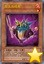 | 双头共鸣者 | [怪兽|效果|调整] 恶魔/炎 [★1] 0/0 「双头共鸣者」的②的效果1回合只能使用1次。 ①：这张卡召唤·特殊召唤成功的场合，以场上1只表侧表示怪兽为对象才能发动。这个回合，那只表侧表示怪兽当作调整使用。 ②：把墓地的这张卡除外，以自己场上1只恶魔族怪兽为对象才能发动。这个回合，那只恶魔族怪兽当作调整使用。 |
| 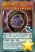 | 霸王门 零 | [怪兽|效果|灵摆] 恶魔/暗 [★7] 0/0 ←0 【灵摆】 0→ ①：自己场上有「霸王龙 扎克」存在的场合，自己受到的全部伤害变成0。 ②：1回合1次，另一边的自己的灵摆区域有「霸王门 无限」存在的场合才能发动。自己的灵摆区域2张卡破坏，从卡组把1张「融合」魔法卡加入手卡。 【怪兽效果】 ①：1回合1次，以这张卡以外的自己场上1张表侧表示的卡为对象才能发动。那张卡和这张卡破坏，把1只龙族融合怪兽或者龙族同调怪兽从额外卡组特殊召唤。这个效果特殊召唤的怪兽的攻击力·守备力变成0，效果无效化，不能作为同调·超量召唤的素材。 ②：怪兽区域的这张卡被战斗·效果破坏的场合才能发动。这张卡在自己的灵摆区域放置。 |
| 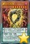 | 霸王门 无限 | [怪兽|效果|灵摆] 恶魔/暗 [★7] 0/0 13/13 ←13 【灵摆】 13→ ①：自己场上有怪兽存在的场合，自己不能灵摆召唤。这个效果不会被无效化。 ②：1回合1次，自己场上有「霸王龙 扎克」存在的场合，以对方场上1只表侧表示怪兽为对象才能发动。自己基本分回复那只怪兽的攻击力的数值。 【怪兽效果】 ①：1回合1次，以这张卡以外的自己场上1张表侧表示的卡为对象才能发动。那张卡和这张卡破坏，把1只龙族超量怪兽或者龙族灵摆怪兽从额外卡组特殊召唤。这个效果特殊召唤的怪兽的攻击力·守备力变成0，效果无效化，不能作为同调·超量召唤的素材。 ②：怪兽区域的这张卡被战斗·效果破坏的场合才能发动。这张卡在自己的灵摆区域放置。 |
| 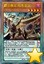 | 霸王眷龙 暗黑亚龙 | [怪兽|效果|灵摆] 龙/暗 [★4] 1800/1200 5/5 ←5 【灵摆】 5→ ①：1回合1次，自己场上没有怪兽存在的场合才能发动。从卡组选1只「霸王门」灵摆怪兽在自己的灵摆区域放置。这个效果的发动后，直到回合结束时自己不是暗属性怪兽不能灵摆召唤。 【怪兽效果】 「霸王眷龙 暗黑亚龙」的①②的怪兽效果1回合各能使用1次。 ①：这张卡召唤·特殊召唤成功的场合才能发动。从卡组把1只「霸王门」灵摆怪兽加入手卡。 ②：这张卡在墓地存在，自己场上没有怪兽存在的场合才能发动。这张卡从墓地特殊召唤。 |
| 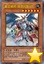 | 真龙骑将 得律阿斯3世 | [怪兽|效果] 幻龙/地 [★6] 2100/2800 这张卡表侧表示上级召唤的场合，可以作为怪兽的代替而把自己场上的永续魔法·永续陷阱卡解放。 ①：上级召唤的表侧表示的这张卡从场上离开的场合才能发动。从卡组把1只「真龙」怪兽守备表示特殊召唤。 ②：只要这张卡在怪兽区域存在，这张卡以外的场上的「真龙」怪兽不会成为对方的效果的对象，不会被对方的效果破坏。 |
| 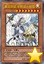 | 真龙剑皇 卓辉星·拼图 | [怪兽|效果] 幻龙/光 [★8] 2950/2950 这张卡表侧表示上级召唤的场合，可以作为怪兽的代替而把自己场上的永续魔法·永续陷阱卡解放。 ①：这张卡不受原本种类（怪兽·魔法·陷阱）和为这张卡的上级召唤而解放的卡相同的卡的效果影响。 ②：上级召唤的这张卡存在的场合，1回合1次，从自己墓地把1张永续魔法·永续陷阱卡除外，以这张卡以外的场上1张卡为对象才能发动。那张卡破坏。这个效果在对方回合也能发动。 |
| 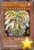 | 真龙机兵 十二炼机圣 | [怪兽|效果] 幻龙/光 [★9] 3000/3000 这张卡通常召唤的场合，必须把3只怪兽解放作召唤，可以作为怪兽的代替而把自己场上的永续魔法·永续陷阱卡解放。 ①：这张卡不受原本种类（怪兽·魔法·陷阱）和为这张卡的上级召唤而解放的卡相同的卡的效果影响。 ②：上级召唤的这张卡被对方破坏的场合才能发动。地·水·炎·风属性的其中1只融合·同调·超量怪兽从额外卡组特殊召唤。 |
| 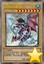 | 幻煌龙 螺旋 | [怪兽|通常] 幻龙/水 [★8] 2900/2900 经历了炽烈战涡的猛龙。其负伤之躯接触古老光芒，最终完成自身的浸涡。不久，巨龙展开自己的双翅，变为称霸天涡的煌者。那位新生的煌，究竟是梦是真还是幻。 |
| 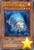 | 电子光虫-LED瓢虫 | [怪兽|效果] 昆虫/光 [★3] 500/0 把这张卡作为超量召唤的素材的场合，不是昆虫族怪兽的超量召唤不能使用。 ①：1回合1次，表侧攻击表示的这张卡变成守备表示时才能发动。从卡组把1只昆虫族·3星怪兽加入手卡。 ②：场上的这张卡为素材作超量召唤的怪兽得到以下效果。 ●这张卡战斗破坏怪兽时自己从卡组抽1张。 |
| 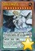 | 智天之神星龙 | [怪兽|效果|灵摆] 岩石/地 [★11] 3450/2950 5/5 ←5 【灵摆】 5→ 「智天之神星龙」的灵摆效果1回合只能使用1次。 ①：自己主要阶段才能发动。从卡组选1只「神数」灵摆怪兽表侧表示加入自己的额外卡组，这张卡的灵摆刻度直到回合结束时变成和那只灵摆怪兽的灵摆刻度相同。 【怪兽效果】 这张卡不能通常召唤。这张卡在额外卡组表侧表示存在，把包含「神数」怪兽3只以上的自己场上的怪兽全部解放的场合才能特殊召唤。 ①：这张卡特殊召唤成功的回合，自己在通常的灵摆召唤外加上只有1次，自己主要阶段可以把「神数」怪兽灵摆召唤。 ②：1回合1次，把自己场上1只怪兽解放才能发动。从卡组把1只「神数」怪兽特殊召唤。 |
| 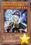 | 影灵衣巫女 艾莉娅儿 | [怪兽|效果] 念动力/水 [★4] 1000/1800 「影灵衣巫女 艾莉娅儿」的②的效果1回合只能使用1次。 ①：1回合1次，把手卡的「影灵衣」卡任意数量给对方观看才能发动。直到回合结束时，这张卡的等级上升或者下降给人观看的卡数量的数值。 ②：这张卡被效果解放的场合才能发动。从卡组把仪式怪兽以外的1只「影灵衣」怪兽加入手卡。 |
| 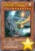 | 巨大战舰 巨核Mk-3 | [怪兽|效果] 机械/光 [★8] 2700/1900 ①：对方场上有怪兽存在，自己场上没有怪兽存在的场合，这张卡可以从手卡守备表示特殊召唤。 ②：这张卡召唤·特殊召唤成功的场合发动。给这张卡放置3个指示物。 ③：这张卡不会被战斗破坏。 ④：这张卡进行战斗的伤害步骤结束时发动。这张卡1个指示物取除。不取除的场合这张卡破坏。 ⑤：把墓地的这张卡除外才能发动。自己墓地的「巨大战舰」怪兽全部回到卡组。 |
| 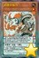 | 灵摆多福鸟 | [怪兽|效果|灵摆] 鸟兽/地 [★1] 0/0 ←0 【灵摆】 0→ ①：这张卡发动的回合的自己主要阶段只有1次，从自己墓地的怪兽或者除外的自己怪兽之中以「灵摆多福鸟」以外的1只灵摆怪兽为对象才能发动。那只灵摆怪兽表侧表示加入自己的额外卡组。 【怪兽效果】 ①：这张卡召唤·特殊召唤成功的场合才能发动。从自己的额外卡组把「灵摆多福鸟」以外的1只表侧表示的1星灵摆怪兽特殊召唤。这个效果特殊召唤的怪兽从场上离开的场合除外。 （注：效果暂未确定） |
| 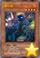 | 爆竹鬼 | [怪兽|效果] 恶魔/炎 [★4] 1700/200 「爆竹鬼」的①的效果1回合只能使用1次。 ①：把这张卡从手卡丢弃才能发动。给与对方1000伤害，下次的自己抽卡阶段跳过。这个效果在对方回合也能发动。 ②：只要这张卡在怪兽区域存在，每次对方受到效果伤害给这张卡放置1个指示物。 ③：自己·对方的结束阶段发动。这张卡的指示物全部取除，给与对方那个数量×300伤害。 |
| 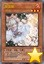 | 灰流丽 | [怪兽|效果|调整] 不死/炎 [★3] 0/1800 「灰流丽」的效果1回合只能使用1次。 ①：包含以下其中任意种效果的魔法·陷阱·怪兽的效果发动时，把这张卡从手卡丢弃才能发动。那个效果无效。这个效果在对方回合也能发动。 ●从卡组把卡加入手卡的效果 ●从卡组把怪兽特殊召唤的效果 ●从卡组把卡送去墓地的效果 |
| 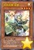 | 凭依装着-莱娜 | [怪兽|效果] 魔法师/光 [★4] 1850/1500 ①：这张卡可以把1只「光灵使 莱娜」和1只光属性怪兽从自己场上送去墓地，从手卡·卡组特殊召唤。 ②：这张卡的①的方法特殊召唤成功时才能发动。从卡组把「凭依装着-莱娜」以外的1只守备力1500的魔法师族怪兽加入手卡。 ③：这张卡的①的方法特殊召唤的这张卡向守备表示怪兽攻击的场合，给与攻击力超过那个守备力的数值的战斗伤害。 |
| 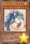 | 妖精传姬-辉夜 | [怪兽|效果] 魔法师/光 [★4] 1850/1000 ①：这张卡召唤成功时才能发动。从卡组把1只攻击力1850的魔法师族怪兽加入手卡。 ②：1回合1次，以对方场上1只表侧表示怪兽为对象才能发动。对方可以把1张那只怪兽的同名卡从自身的卡组·额外卡组送去墓地让这个效果无效。没送去墓地的场合，这张卡和作为对象的怪兽回到持有者手卡。这个效果在对方回合也能发动。 |
| 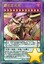 | 霸王龙 扎克 | [怪兽|效果|融合|灵摆] 龙/暗 [★12] 4000/4000 1/1 ←1 【灵摆】 1→ ①：只要这张卡在灵摆区域存在，对方场上的融合·同调·超量怪兽不能把效果发动。 ②：1回合1次，对方在抽卡阶段以外从卡组把卡加入手卡时才能发动。那卡破坏。 【怪兽效果】 龙族的融合·同调·超量·灵摆怪兽各1只合计4只 这张卡不用融合召唤不能特殊召唤。 ①：这张卡特殊召唤成功的场合发动。对方场上的卡全部破坏。 ②：这张卡不会成为对方的效果的对象，不会被对方的效果破坏。 ③：这张卡战斗破坏对方怪兽时才能发动。从卡组·额外卡组把1只「霸王眷龙」怪兽特殊召唤。 ④：怪兽区域的这张卡被战斗·效果破坏的场合才能发动。这张卡在自己的灵摆区域放置。 |
| 娱乐伙伴 机炮食尸鬼 | [怪兽|效果|融合] 恶魔/暗 [★8] 2900/900 「娱乐伙伴」怪兽＋5星以上的暗属性怪兽 「娱乐伙伴 机炮食尸鬼」的效果1回合只能使用1次。 ①：这张卡融合召唤成功的场合才能发动。给与对方为场上的卡数量×200伤害。这张卡用灵摆怪兽为素材作融合召唤的场合，再选对方场上1只怪兽破坏，给与对方那只怪兽的原本攻击力数值的伤害。 | |
| 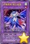 | 抒情歌鸲-独立夜莺 | [怪兽|效果|融合] 鸟兽/风 [★1] 1000/0 「抒情歌鸲-聚集夜莺」＋「抒情歌鸲」怪兽 ①：原本卡名包含「抒情歌鸲」的超量怪兽作为素材让这张卡融合召唤成功的场合才能发动。这张卡的等级上升那些怪兽持有的超量素材数量的数值。 ②：这张卡的攻击力上升这张卡的等级×500，这张卡不受其他卡的效果影响。 ③：1回合1次，自己主要阶段才能发动。给与对方这张卡的等级×500伤害。 |
| 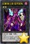 | 幻影骑士团 诅咒标枪 | [怪兽|效果|超量] 战士/暗 [☆2] 1600/0 2星怪兽×2 「幻影骑士团 诅咒标枪」的效果1回合只能使用1次。 ①：把这张卡1个超量素材取除，以对方场上1只表侧表示怪兽为对象才能发动。直到回合结束时，那只怪兽的攻击力变成0，效果无效化。这张卡有「幻影骑士团」卡在作为超量素材的场合，这个效果在对方回合也能发动。 |
| 抒情歌鸲-聚集夜莺 | [怪兽|效果|超量] 鸟兽/风 [☆1] 0/0 1星怪兽×2只以上 ①：这张卡的攻击力上升这张卡的超量素材数量×200。 ②：这张卡可以直接攻击，持有超量素材的这张卡在同1次的战斗阶段中可以作出最多有那个数量的攻击。 ③：1回合1次，把这张卡1个超量素材取除才能发动。直到回合结束时，自己场上的「抒情歌鸲」怪兽不会被战斗·效果破坏，自己受到的战斗伤害变成0。这个效果在对方回合也能发动。 | |
| 急袭猛禽-异邦猎鹰 | [怪兽|效果|超量] 鸟兽/暗 [☆5] 2000/2000 5星怪兽×2 ①：这张卡有超量怪兽在作为超量素材的场合，得到以下效果。 ●1回合1次，把这张卡1个超量素材取除，以对方场上1只怪兽为对象才能发动。那只怪兽破坏，给与对方那个原本攻击力数值的伤害。 ②：这张卡被对方破坏送去墓地的场合，以「急袭猛禽-异邦猎鹰」以外的自己墓地1只「急袭猛禽」超量怪兽为对象才能发动。那只怪兽特殊召唤，把这张卡在那张卡下面重叠作为超量素材。 | |
| 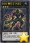 | DDD 磐石王 大流士 | [怪兽|效果|超量] 恶魔/地 [☆3] 1900/1000 恶魔族3星怪兽×2 ①：1回合1次，把这张卡1个超量素材取除，以自己场上1张「契约书」卡为对象才能发动。那张卡破坏，自己从卡组抽1张。这个效果在对方回合也能发动。 ②：这张卡和对方怪兽进行战斗的伤害计算时，把这张卡1个超量素材取除才能发动。这张卡不会被那次战斗破坏，伤害计算后那只对方怪兽破坏，给与对方500伤害。 |
| 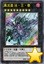 | 真龙皇 法·王·兽 | [怪兽|效果|超量] 幻龙/暗 [☆9] 3000/3000 9星怪兽×2只以上 ①：1回合1次，把这张卡1个超量素材取除，宣言1个属性才能发动。直到回合结束时，场上的表侧表示怪兽变成宣言的属性，宣言的属性的对方怪兽不能把效果发动，也不能攻击。这个效果在对方回合也能发动。 ②：只要这张卡在怪兽区域存在，自己手卡的「真龙」怪兽的效果破坏的怪兽从对方场上也能选。 |
| 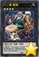 | 十二兽 猴槌 | [怪兽|效果|超量] 兽战士/地 [☆4] ?/? 4星怪兽×3只以上 「十二兽 猴槌」1回合1次也能在同名卡以外的自己场上的「十二兽」怪兽上面重叠来超量召唤。 ①：这张卡的攻击力·守备力上升这张卡作为超量素材中的「十二兽」怪兽的各自数值。 ②：只要持有超量素材的这张卡在怪兽区域存在，对方不能把这张卡以外的场上的「十二兽」怪兽作为效果的对象。 ③：自己·对方的结束阶段发动。这张卡1个超量素材取除。 |
| 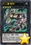 | 十二兽 狗环 | [怪兽|效果|超量] 兽战士/地 [☆4] ?/? 4星怪兽×2只以上 「十二兽 狗环」1回合1次也能在同名卡以外的自己场上的「十二兽」怪兽上面重叠来超量召唤。 ①：这张卡的攻击力·守备力上升这张卡作为超量素材中的「十二兽」怪兽的各自数值。 ②：1回合1次，把这张卡1个超量素材取除，以自己墓地1只「十二兽」怪兽为对象才能发动。那只怪兽特殊召唤。这个效果特殊召唤的怪兽在这个回合效果无效化，不能作为超量召唤的素材。 |
| 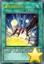 | 魔术师的右手 | [魔法|永续] ①：1回合1次，自己场上有魔法师族怪兽存在的场合，对方发动的魔法卡的效果无效并破坏。 |
| 魔术师的左手 | [魔法|永续] ①：1回合1次，自己场上有魔法师族怪兽存在的场合，对方发动的陷阱卡的效果无效并破坏。 | |
| 魔术师的再演 | [魔法|永续] ①：只在这张卡在场上表侧表示存在才有1次，以自己墓地1只3星以下的魔法师族怪兽为对象才能发动。那只怪兽特殊召唤。 ②：这张卡被送去墓地的场合才能发动。从卡组把「魔术师的再演」以外的1张「魔术师」永续魔法卡加入手卡。 | |
| 超越融合 | [魔法] 不能对应这张卡的发动让卡的效果发动。 ①：支付2000基本分才能发动。融合怪兽卡决定的2只融合素材怪兽从自己场上送去墓地，把那1只融合怪兽从额外卡组融合召唤。 ②：把墓地的这张卡除外，以这张卡的效果融合召唤的1只怪兽为对象才能发动。那只怪兽的融合召唤使用过的一组融合素材怪兽从自己墓地特殊召唤。这个效果特殊召唤的怪兽的攻击力·守备力变成0，效果无效化。 | |
| 真龙凰的使徒 | [魔法|永续] 「真龙凰的使徒」的①②③的效果1回合各能使用1次。 ①：以自己墓地3张「真龙」卡为对象才能发动。那些卡加入卡组洗切。那之后，自己从卡组抽1张。 ②：自己主要阶段才能发动。把1只「真龙」怪兽表侧表示上级召唤。 ③：这张卡从魔法与陷阱区域送去墓地的场合，以场上1张魔法·陷阱卡为对象才能发动。那张卡破坏。 | |
| 幻煌之都 帕西菲斯 | [魔法|场地] 这张卡的卡名在规则上当作「海」使用。这张卡的效果发动的回合，自己不能把效果怪兽召唤·特殊召唤。 ①：1回合1次，自己对通常怪兽1只的召唤·特殊召唤成功的场合发动。从卡组把1张「幻煌龙」卡加入手卡。 ②：自己场上没有衍生物存在，对方把魔法·陷阱·怪兽的效果发动的场合才能发动。在自己场上把1只「幻煌龙衍生物」（幻龙族·水·6星·攻/守2000）特殊召唤。 | |
| 幻煌龙的螺旋突 | [魔法|装备] 通常怪兽才能装备。「幻煌龙的螺旋突」的②的效果1回合只能使用1次。 ①：装备怪兽向守备表示怪兽攻击的场合，给与对方为攻击力超过那个守备力的数值的战斗伤害。 ②：装备怪兽给与对方战斗伤害时才能发动。从自己的手卡·卡组·墓地选1只「幻煌龙 螺旋」特殊召唤，这张卡给那只怪兽装备。那之后，可以选对方场上1只攻击表示怪兽变成守备表示。 | |
| 幻煌龙的螺旋绞 | [魔法|装备] 通常怪兽才能装备。「幻煌龙的螺旋绞」的②的效果1回合只能使用1次。 ①：装备怪兽的攻击力上升500。 ②：装备怪兽战斗破坏对方怪兽时才能发动。从自己的手卡·卡组·墓地选1只「幻煌龙 螺旋」特殊召唤，这张卡给那只怪兽装备。那之后，给与对方1000伤害。 | |
| 幻煌龙的螺旋波 | [魔法|装备] 通常怪兽才能装备。「幻煌龙的螺旋波」的②的效果1回合只能使用1次。 ①：装备怪兽1回合只有1次不会被战斗破坏。 ②：装备怪兽进行战斗的战斗阶段结束时才能发动。从自己的手卡·卡组·墓地选1只「幻煌龙 螺旋」特殊召唤，这张卡给那只怪兽装备。那之后，有对方手卡的场合，对方选1张手卡丢弃。 | |
| 光虫信号 | [魔法|速攻] 「光虫信号」在1回合只能发动1张。 ①：以自己场上1只昆虫族超量怪兽为对象才能发动。比那只自己怪兽阶级高2阶或者阶级低2阶的1只昆虫族超量怪兽在作为对象的怪兽上面重叠当作超量召唤从额外卡组特殊召唤。 | |
| 巨大要塞 泽洛斯 | [魔法|场地] ①：作为这张卡的发动时的效果处理，可以从卡组把1张「BOSS来袭」加入手卡。 ②：自己场上的「巨大战舰」怪兽的攻击力·守备力上升500，不会成为对方的效果的对象，不会被对方的效果破坏。 ③：1回合1次，自己主要阶段才能发动。从手卡把1只「巨大战舰」怪兽特殊召唤。 ④：自己场上有「巨大战舰」怪兽召唤·特殊召唤的场合发动。给那些怪兽放置1个自身的效果使用的指示物。 | |
| 决斗者降临 | [魔法] 「决斗者降临」在1回合只能发动1张。 ①：自己或者对方的灵摆区域有卡存在的场合才能发动。从卡组把1只「灵摆」灵摆怪兽或者1张「灵摆」魔法·陷阱卡加入手卡。 | |
| 舞台旋转 | [魔法|速攻] ①：从自己卡组选2张卡名不同的场地魔法卡，那之内的1张在自己场上盖放，另1张在对方场上盖放。只要这个效果盖放的卡的其中任意张在场地区域盖放中，双方不能把其他的场地魔法卡发动·盖放。 | |
| 诀别 | [陷阱] ①：对方战斗阶段从手卡把1张魔法卡送去墓地才能发动。那次战斗阶段结束。场上的表侧表示怪兽直到回合结束时效果无效化。 | |
| 幻影骑士团 失落护臂甲 | [陷阱] ①：以场上1只表侧表示怪兽为对象才能发动。直到回合结束时，那只怪兽的攻击力下降600，等级变成2星，自己的「幻影骑士团」怪兽不会被战斗破坏。那之后，这张卡变成通常怪兽（战士族·暗·2星·攻600/守0）在怪兽区域守备表示特殊召唤（不当作陷阱卡使用）。 | |
| 幻影骑士团 失常磁环 | [陷阱] ①：对方怪兽的攻击宣言时才能发动。那次攻击无效。那之后，这张卡变成持有以下效果的效果怪兽（战士族·暗·2星·攻/守0）在怪兽区域攻击表示特殊召唤（不当作陷阱卡使用）。 ●把这张卡以及自己场上的表侧表示的1只「幻影骑士团」怪兽或者1张「幻影」永续魔法·永续陷阱卡送去墓地才能发动。自己从卡组抽2张。这个效果在对方回合也能发动。 | |
| 常暗的契约书 | [陷阱|永续] ①：自己的灵摆区域有2张「DD」卡存在的场合，对方不能把场上的怪兽作为魔法·陷阱卡的效果的对象，不能作为上级召唤的解放，也不能作为融合·同调·超量召唤的素材。 ②：自己准备阶段发动。自己受到1000伤害。 | |
| 真龙的默示录 | [陷阱|永续] 「真龙的默示录」的①②③的效果1回合各能使用1次，作为①②的效果在同一连锁上不能发动。 ①：以这张卡以外的自己场上1张「真龙」卡为对象才能发动。那张卡破坏，对方场上的全部表侧表示怪兽的攻击力·守备力变成一半。 ②：对方主要阶段才能发动。把1只「真龙」怪兽表侧表示上级召唤。 ③：这张卡从魔法与陷阱区域送去墓地的场合，以场上1只怪兽为对象才能发动。那只怪兽破坏。 | |
| 十二兽的相克 | [陷阱|永续] 「十二兽的相克」的①的效果1回合只能使用1次。 ①：只要这张卡在魔法与陷阱区域存在，自己的「十二兽」超量怪兽把超量素材取除来让效果发动的场合，取除的超量素材可以从自己场上的其他的超量怪兽取除。 ②：把墓地的这张卡除外，以自己场上2只「十二兽」超量怪兽为对象才能发动。作为对象的怪兽中的1只在另1只下面重叠作为超量素材。 | |
| 幻煌龙的战涡 | [陷阱] 场上有「海」存在的场合，这张卡的发动从手卡也能用。 ①：自己场上的怪兽只有通常怪兽的场合，以对方场上1张卡为对象才能发动。那张卡破坏。 ②：把墓地的这张卡除外，以自己场上1只通常怪兽为对象才能发动。那只怪兽可以装备的自己场上的全部「幻煌龙」装备魔法卡给那只通常怪兽装备。 | |
| 幻煌龙的浸涡 | [陷阱] 场上有「海」存在的场合，这张卡的发动从手卡也能用。 ①：自己场上的怪兽只有通常怪兽的场合，以对方场上1只效果怪兽为对象才能发动。那只怪兽直到回合结束时攻击力·守备力下降1000，效果无效化。 ②：把墓地的这张卡除外，以自己场上1只通常怪兽为对象才能发动。从自己的手卡·墓地选1张「幻煌龙」装备魔法卡给那只通常怪兽装备。 | |
| 幻煌龙的天涡 | [陷阱] 场上有「海」存在的场合，这张卡的发动从手卡也能用。 ①：以自己场上1只「幻煌龙 螺旋」为对象才能发动。那只怪兽用有「幻煌龙」装备魔法卡3种类以上装备的状态战斗破坏对方3只效果怪兽时，自己决斗胜利。 ②：自己场上的通常怪兽被战斗·效果破坏的场合，可以作为代替把墓地的这张卡除外。 | |
| 破坏剑士的摇篮 | [陷阱] 「破坏剑士的摇篮」在1回合只能发动1张。 ①：从卡组把「破坏剑士的摇篮」以外的1张「破坏剑」卡和1只「巴斯达·布雷达」怪兽送去墓地才能发动。从自己的额外卡组·墓地选1只「破戒蛮龙-破坏龙」特殊召唤。这个效果特殊召唤的怪兽在下个回合的结束阶段破坏。 ②：把墓地的这张卡除外才能发动。这个回合，自己场上的「破坏剑」卡不会被战斗·效果破坏。 | |
| 幽丽的幻泷 | [陷阱] ①：可以从以下效果选择1个发动。 ●从卡组把1只幻龙族怪兽加入手卡。 ●从手卡以及自己场上的表侧表示怪兽之中把幻龙族怪兽任意数量送去墓地才能发动。自己从卡组抽出送去墓地的怪兽的数量＋1张。 | |
| 长眠不醒的噩梦 | [陷阱|永续] 「长眠不醒的噩梦」的效果在同一连锁上只能发动1次。 ①：支付1000基本分，以场上1张表侧表示的魔法·陷阱卡为对象才能把这个效果发动。那张卡破坏。 | |
| 钻尘妖 | [陷阱] ①：场上的卡被战斗·效果破坏时才能发动。从卡组选那些破坏的卡数量的「尘妖」怪兽在自己·对方场上特殊召唤。 ②：这张卡在墓地存在的场合只有1次，把自己墓地1只「尘妖」怪兽除外才能发动。这张卡变成通常怪兽（恶魔族·暗·1星·攻0/守1000）在对方的怪兽区域守备表示特殊召唤（不当作陷阱卡使用）。这个效果特殊召唤的这张卡不能解放，也不能作为融合·同调·超量召唤的素材。 | |
| 神数的神意 | [魔法] 「神数的神意」在1回合只能发动1张。 ①：从卡组把「神数的神意」以外的1张「神数」卡加入手卡。 ②：自己场上的「神数」卡被破坏的场合，可以作为代替把墓地的这张卡除外。这个效果在这张卡送去墓地的回合不能使用。 | |
| 真龙战士 点火烈·炽热 | [怪兽|效果] 幻龙/炎 [★5] 2400/1000 这张卡表侧表示上级召唤的场合，可以作为怪兽的代替而把自己场上的永续魔法·永续陷阱卡解放。 ①：1回合1次，上级召唤的这张卡存在，对方把魔法·陷阱·怪兽的效果发动时才能发动。从卡组选1张「真龙」永续魔法卡加入手卡或在自己场上发动。 | |
| 真龙导士 威风凛·少女 | [怪兽|效果] 幻龙/风 [★5] 2300/1500 这张卡表侧表示上级召唤的场合，可以作为怪兽的代替而把自己场上的永续魔法·永续陷阱卡解放。 ①：1回合1次，上级召唤的这张卡存在，对方把魔法·陷阱·怪兽的效果发动时才能发动。从卡组把1只「真龙」怪兽加入手卡。 | |
| 真龙拳士 雾动轰·铁拳 | [怪兽|效果] 幻龙/水 [★6] 2500/1200 这张卡表侧表示上级召唤的场合，可以作为怪兽的代替而把自己场上的永续魔法·永续陷阱卡解放。 ①：1回合1次，上级召唤的这张卡存在，对方把魔法·陷阱·怪兽的效果发动时才能发动。从卡组选1张「真龙」永续陷阱卡加入手卡或在自己场上发动。 | |
| 龙神阵·略图 | [魔法|场地] ①：场上的「真龙」怪兽的攻击力·守备力上升300。 ②：只要这张卡在场地区域存在，上级召唤的「真龙」怪兽在1回合各有1次不会被战斗破坏。 ③：1回合1次，自己主要阶段才能发动。选这张卡以外的自己的手卡·场上1张卡破坏，从卡组把1张「真龙」卡加入手卡。 | |
| 真龙的继承 | [魔法|永续] 「真龙的继承」的①②③的效果1回合各能使用1次。 ①：自己主要阶段才能发动。自己从卡组抽出这个回合从场上送去墓地的「真龙」卡种类（怪兽·魔法·陷阱）的数量。 ②：自己主要阶段才能发动。把1只「真龙」怪兽表侧表示上级召唤。 ③：这张卡从魔法与陷阱区域送去墓地的场合，以场上1张魔法·陷阱卡为对象才能发动。那张卡破坏。 | |
| 真龙皇的复活 | [陷阱|永续] 「真龙皇的复活」的①②③的效果1回合各能使用1次，作为①②的效果在同一连锁上不能发动。 ①：以自己墓地1只「真龙」怪兽为对象才能发动。那只怪兽守备表示特殊召唤。这个效果的发动后，直到回合结束时自己不能把怪兽特殊召唤。 ②：对方主要阶段才能发动。把1只「真龙」怪兽表侧表示上级召唤。 ③：这张卡从魔法与陷阱区域送去墓地的场合，以场上1只怪兽为对象才能发动。那只怪兽破坏。 | |
| 真龙凰 玛丽亚姆内 | [怪兽|效果] 幻龙/风 [★9] 2700/2100 「真龙凰 玛丽亚姆内」的①②的效果1回合各能使用1次。 ①：自己主要阶段才能发动。从这张卡以外的手卡以及自己场上的表侧表示怪兽之中把包含风属性怪兽的2只怪兽破坏，这张卡从手卡特殊召唤，把2只风属性怪兽破坏的场合，可以从对方卡组上面把4张卡除外。 ②：这张卡被效果破坏的场合才能发动。从卡组把1只风属性以外的幻龙族怪兽加入手卡。 | |
| 神数的星战 | [陷阱] 「神数的星战」在1回合只能发动1张。自己的灵摆区域有2张「神数」卡存在的场合，这张卡的发动从手卡也能用。 ①：以自己场上1张「神数」卡和对方场上1张卡为对象才能发动。那些卡破坏。 | |
| 雾动机龙咆哮 | [陷阱|永续] ①：作为这张卡的发动时的效果处理，可以从卡组选最多2只「雾动机龙」灵摆怪兽在自己的灵摆区域放置。放置的场合，直到下个回合的结束时自己不是「雾动机龙」怪兽不能灵摆召唤。 ②：这张卡已在魔法与陷阱区域表侧表示存在的场合，1回合1次，把自己场上1只「雾动机龙」怪兽解放，以对方场上1张卡为对象才能发动。那张卡回到持有者手卡。 | |
| 十二兽 鸡拳 | [怪兽|效果] 兽战士/地 [★4] 800/1200 ①：这张卡被战斗·效果破坏的场合，以「十二兽 鸡拳」以外的自己墓地1张「十二兽」卡为对象才能发动。那张卡回到卡组。 ②：持有这张卡作为素材中的原本种族是兽战士族的超量怪兽得到以下效果。 ●这张卡为对象的对方怪兽的效果发动时，把这张卡1个超量素材取除才能发动。那个发动无效。 | |
| 狒狒面包树 | [怪兽|效果] 植物/暗 [★3] 1200/1000 ①：这张卡召唤·特殊召唤成功的场合才能发动。自己从卡组抽1张，那之后选1张手卡回到卡组最上面或者最下面。 ②：这张卡被战斗·效果破坏的场合才能发动。从卡组把「狒狒面包树」任意数量特殊召唤。 |
Q.某张卡有BUG！
A.请到页面下方留言反馈，或联系233服QQ群里的尸体233（QQ：921439818）。
Q.卡片右下角的黄色星星是什么意思？
A.表示那张卡暂未有实卡，是先行卡。其卡片密码暂时使用临时密码（1开头的9位数）。
这种卡需要在23333端口才能使用。此外部分使用同样密码体系的服务器（不包括Checkmate）也可以使用。
实卡发售后，对应的带星星的先行卡会失效，请更新游戏，来获取正式的版本。
Q.卡片右下角的绿色加号是什么意思？
A.表示那张卡已有实卡但YGOPRO的国内官方版本暂未更新，是本补丁增加的卡片。其卡片密码是正式密码。
这种卡在233端口更新前只能在23333端口使用。但其他更新速度较快的服务器（包括Checkmate）一般也可使用。
一般这种卡不久就会正式更新到233服，请关注公告，更新后请下载YGOPRO的正式更新来获取那些卡。
Q.为什么安装了最新的先行卡补丁仍然没有某些卡？
A.本补丁只包含先行卡，不包含已经正式更新的卡。
请下载YGOPRO的正式更新来获取那些卡。
Q.为什么我更新先行卡补丁之后反而有卡消失了？
A.因为那些卡已经不再是先行卡了，本补丁不再包含它们。
请下载YGOPRO的正式更新来获取那些卡。
Q.安装后没有新卡？
A.本补丁附带新卡列表的卡组。
请确保你把文件解压到了游戏文件夹里，而不是新建了一个文件夹。
电脑版需要重启游戏才能重新载入数据库。
手机版需要自定义数据库，详见使用方法。
Q.安装后新卡没有卡图？
A.请确保你解压出来了压缩包里所有文件，不能只解压1个文件。
Q.手机版找不到sdcard文件夹？
A.部分手机可能位于storage或mnt文件夹里。
Q.手机版提示没有权限？
A.同上，换个文件夹试试。
Q.某张卡不能用，提示无效卡组？
A.本补丁的最新版只能与23333端口完美兼容。
请下载YGOPRO的正式更新，并更新先行卡补丁到最新版，把端口改为23333，才能正常使用先行卡。
Q.搜索卡片时发现有重复卡片？
A.因为本补丁是先行卡补丁，正式更新的卡片可能会与本补丁的卡片重复。删除或更新本补丁即可。
Q.电脑版怎么删除补丁？
A.删除expansions文件夹或其中pre-release.cdb即可。
Q.手机版怎么删除补丁？
A.点自定义卡片数据库下面的重置卡片数据库。
如果你打过其他的补丁，还需要再自定义一次数据库，选择cards.cdb。